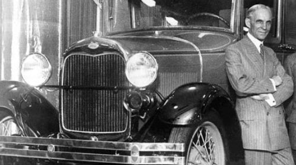

Alfonso Taft is a surfer stoner All-American Aryan alpha male quarterback. Raised in the Northeast, he speaks with a Southern twang for no apparent reason. Host of America's #1 Chadcast.


Deferential admiration does little to serve ROK readers. Lessons from a prolific man of historical significance like Henry Ford however; are of great value. What can we learn from Henry Ford? What were his core teachings? Lessons from My Life and Work by Henry Ford contain truths that can guide a man to success, wealth, and fortune.

“The man who has the largest capacity for work and thought is the man who is bound to succeed.”
There are endless self-improvement blogs, videos, and courses available for men online. These resources are masturbatory unless they result in action. There is no secret to success. You must put in the work.
“The Natural thing to do is work— to recognize that prosperity and happiness can be obtained only through honest effort.”
“It is men’s labour that makes the harvest what it is.”
“…thinking first of money instead of work brings on fear of failure and this fear blocks every avenue of business — it makes a man afraid of competition, of changing his methods, or of doing anything which might change his conditions.”
“Every man is better for a period of work under the open sky.”
If you could recognize this guy, that would be great
When you work for a startup company, you can ascribe yourself any title you want. When I worked for a startup in college I was Regional Manager and Vice President of our three-man company. Titles are meant to a evoke status and hierarchy. Sometimes they can be misleading. Other times they can be infuriating to subordinates— especially when the title isn’t indicative of a man’s character and capabilities.
“Not only is a title often injurious to the wearer, but it has its effect on others as well. There is perhaps no greater single source of personal dissatisfaction among men than the fact that the title-bearers are not always the real leaders.”
How annoying is it when your “boss” is totally inferior and incompetent? Henry Ford was well aware of the frustration and rage this dynamic could cause employees.
A man has an idea for a business or product—who are his potential customers? Does his business provide an essential service that benefits an individual or group of people? Henry Ford viewed business as a service. In doing so he grew his empire to over $87,000,000 in value by April of 1921.
“For the only foundation of real business is service.”
“The spirit of true service will create for us. We have only each of us to do our parts sincerely.”
This should come as no surprise to ROK readers. For our blue pill friends, the competitive nature of life is a harsh reminder that their vision for a multicultural egalitarian world government where all people are exactly equal is a fallacy by nature.
“There can be no greater absurdity and no greater disservice to humanity in general than to insist that all men are equal.”
“We have to recognize the unevenness in human mental equipments.”
“Any plan which starts with the assumption that men are or ought to be equal is unnatural and therefore unworkable.”
Henry Ford began development of his gas engine automobile on a farm in Michigan. This isn’t dissimilar from other great innovators and inventors. Philo Farnsworth began developing the television on a farm in Idaho when he was fourteen. Dr. Shiva Ayyadurai, invented Email in an office in Newark, New Jersey at the age of fourteen.
Globalists would prefer to have innovation centralized in our “Universities” — which are essentially indoctrination camps for kids. Innovation comes from the outside, it is decentralized.
Henry Ford may have paid his workers a good wage, but it wasn’t out of charity — it was a good business decision that some say helped the middle class take off.
“The only use of money is to buy tools to work with or the product of tools.”
Donald Trump during Donald Trump Cutting the Ribbon on his New Apprentice Slots at Taj Mahal at Taj Mahal in Atlantic City, New Jersey, United States. (Photo by Tom Briglia/FilmMagic)
I’m sure plenty of people told Henry Ford an affordable gas engine automobile was an impossibility. I’m sure plenty of people said the same to the Wright brothers, Philo Farnsworth, Dr. Shiva Ayyadurai, and our President, Donald J. Trump.
Faith is a factor in the achievement of the “impossible.”
“Everything is possible… “faith is the substance of things hoped for, the evidence of things not seen.”
In regards to his friend, Thomas Edison, Henry Ford said: “His knowledge is almost universal. He is interested in every conceivable subject and he recognizes no limitations. He believes that all things are possible.”
“I have never been able to discover any honorable reasons for the beginning of the World War. It seems to have grown out of a very complicated situation created largely by those who thought they could profit by war.”
“An impartial investigation of the last war, of what preceded it and what has come out of it, would should beyond a doubt that there is in the world a group of men with vast powers of control, that prefers to remain unknown, that dos not seek office or any of the tokens of power, that belongs to no nation, whatever but is international—a force that uses every government, every widespread business organization, every agency of publicity, every resource of national psychology, to throw the world into a panic for the sake of getting still more power over the world.”
“There were men in every country who were glad to see the Word War begin and sorry to see it stop. Hundreds of American fortunes date from the Civil War; thousands of new fortunes date from the World War. Nobody can deny that war is a profitable business for those who like that kind of monet. War is an orgy of money, just as it is an orgy of blood.”
“Once we were in the war, every facility of the Ford industries was put at the disposal of the Government.”
“We have only started on our development of our country — we have not as yet, with all our talk of wonderful progress, done more than scratch the surface.”
Henry Ford was a visionary and captain of industry. He was an American patriot who fought against subversive international elements within the United States. He will be remembered a king.
Read More: 12 Strategies for Dealing with a Bad Bass